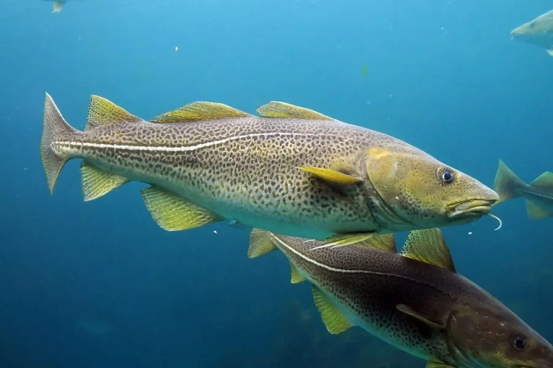

鱼类 · 动物界
大西洋鳕 Gadus morhua

北大西洋的重要经济鱼类，下颌有须、肉白味淡，历史上因过度捕捞导致多个渔场崩溃，是渔业资源管理中的典型案例。
- 分类
- 门脊索动物门纲硬骨鱼纲目鳕形目科鳕科属鳕属
- 栖息环境
- 北大西洋的冷水性底层海域，水深 0–600 m，冬春季洄游到近岸产卵
- 地理分布
- 北大西洋两岸，包括北美东岸、冰岛、英国、北欧和巴伦支海，中国无自然分布
- 保护级别
- IUCN 易危（VU）；中国无自然分布，未列入国家重点保护野生动物名录
物种志
大西洋鳕体呈长椭圆形、稍侧扁，头大，口大，下颌有一根明显的须。体色从灰绿、褐黄到深褐不等，体侧散布暗色斑点，腹部银白，侧线明显；背鳍三个，臀鳍两个。成鱼体长一般 60–100 cm，体重 3–10 kg，最大可超过 1.5 m、体重 40 kg 以上。
大西洋鳕分布于北大西洋两岸，包括北美东岸、冰岛、英国、北欧和巴伦支海，是冷水性底层鱼类。它是肉食性动物，捕食小鱼、甲壳类、软体动物和蠕虫；繁殖期在冬春季，成群的鳕鱼在近岸产卵，雌鱼一次可产数百万粒卵。历史上大西洋鳕是欧洲最重要的渔业资源之一，20 世纪因过度捕捞，加拿大纽芬兰等地的鳕鱼群在 1990 年代崩溃并长期禁渔，成为全球渔业管理史上最著名的教训。IUCN 将其评为易危；中国无自然分布，市场上的鳕鱼产品多来自进口。
形态与习性
- 食性肉食性，捕食小鱼、甲壳类、软体动物和蠕虫
- 体长一般 60–100 cm，最大可超过 1.5 m
- 体重常见 3–10 kg，最大可超过 40 kg
- 寿命可达 20 年以上
- 繁殖冬春季在近岸产卵，雌鱼一次可产数百万粒卵
- 渔业史纽芬兰鳕鱼渔场在 1990 年代因过度捕捞崩溃
趣味知识
- 大西洋鳕下颌有一根明显的须，是它最容易识别的特征。
- 20 世纪 90 年代，加拿大纽芬兰鳕鱼渔场因过度捕捞崩溃，成为渔业管理的经典教训。
- 雌性大西洋鳕一次可产数百万粒卵，但能存活到成年的个体极少。